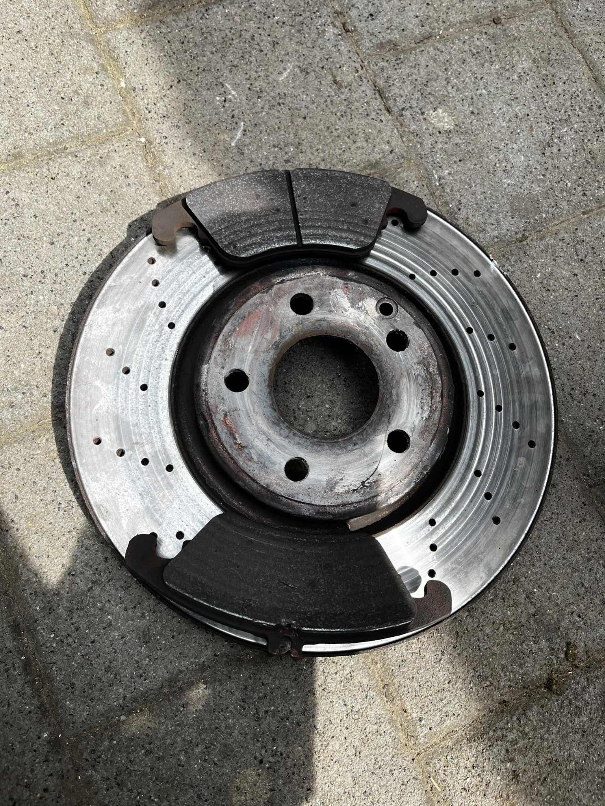
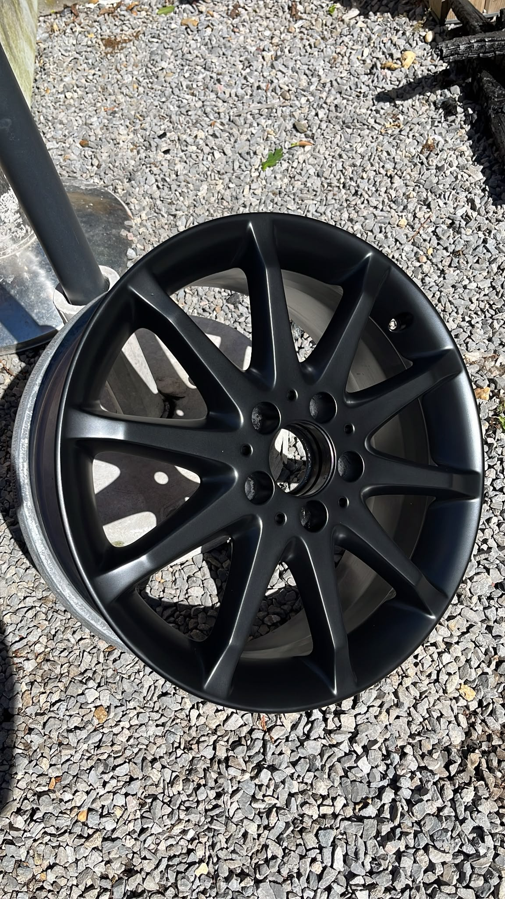
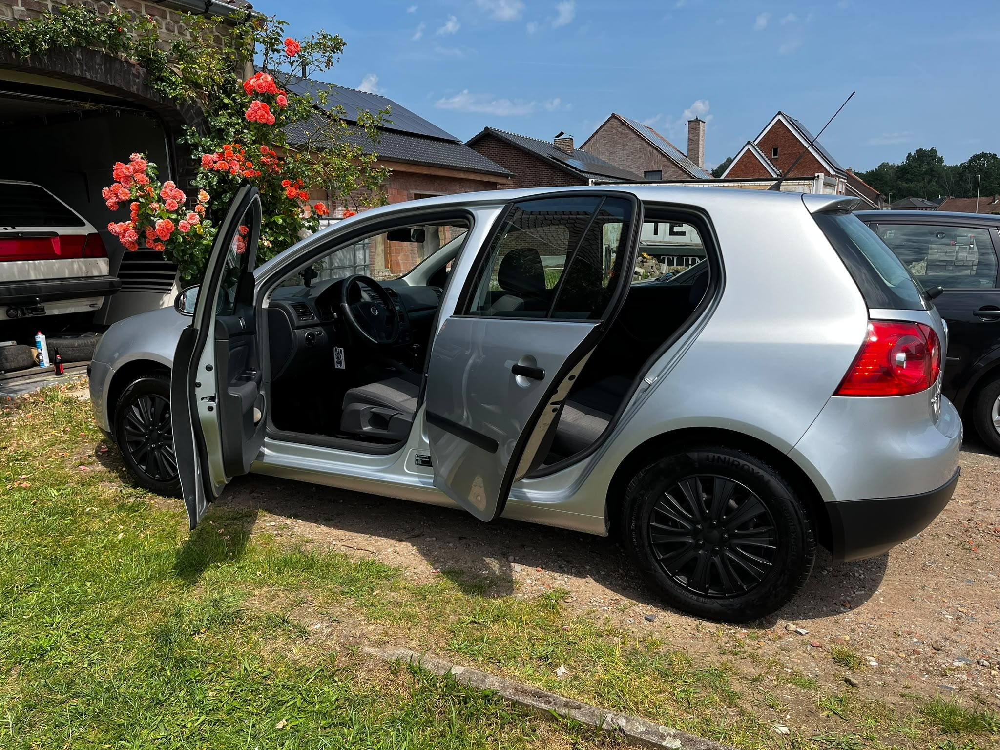
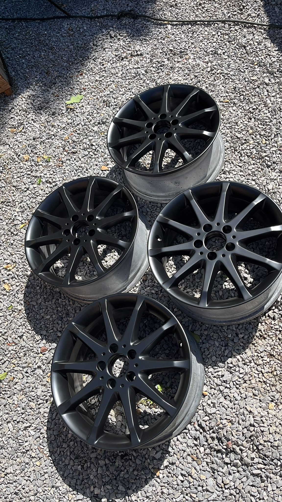

Onderhoud van de wagen.
Regelmatige service, controles en kleine technische werken om uw auto betrouwbaar te houden.
 GATE26
GATE26

Garage, detailing en herstel.
Onderhoud, kleine herstellingen en diepe reiniging van uw wagen, met aandacht voor elk detail aan binnen- en buitenkant.
Wat we doen.

Regelmatige service, controles en kleine technische werken om uw auto betrouwbaar te houden.

Snelle, nette aanpak van kleine defecten, lakschade, montagewerk en praktische herstelpunten.

Grondige reiniging van interieur en exterieur, afgewerkt tot in de kleinste details.

Nieuwe banden monteren, wielen nakijken en kleine velgschade netjes aanpakken.

Fijne correcties aan de carrosserie met focus op een verzorgd en zuiver eindresultaat.

Een doorgedreven behandeling voor wie de wagen echt fris, zuiver en presentabel wil krijgen.
Onze aanpak.
Elke wagen wordt eerst bekeken op de punten die aandacht nodig hebben. Daarna krijgt u een duidelijke aanpak: van onderhoud en banden tot poetswerk, velgenschade en kleine carrosseriecorrecties.
Realisaties.
Afspraak.
Stuur een bericht met enkele foto's van uw wagen en wat er moet gebeuren. Dan kan GATE26 gericht inschatten welke behandeling of herstelling nodig is.